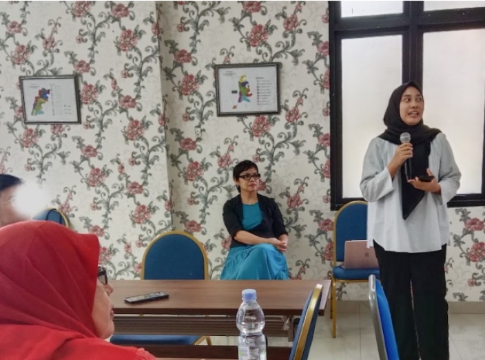
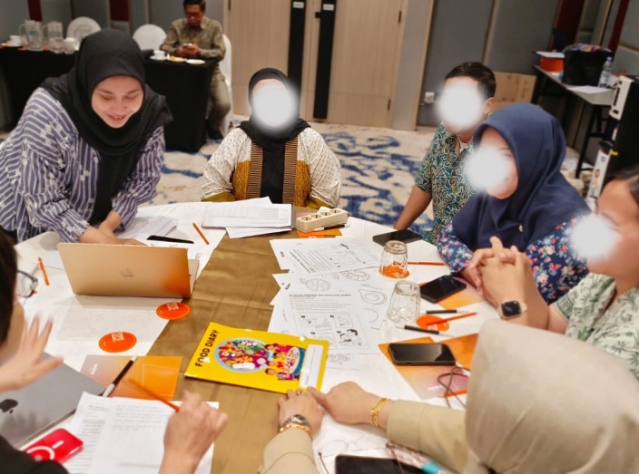
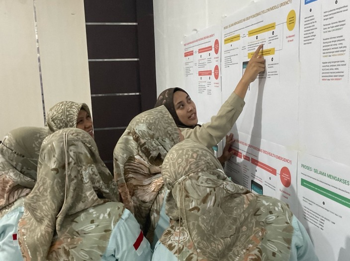

01
Listen to every side
I map the same journey for every user group, so differences between customers, resellers and staff show up side by side.
SEEN IN · EIGER RESELLERI’m a UX researcher who likes being in the room where things happen: a clinic with mothers flipping through a health handbook, a one-on-one session with a reseller, a shopper trying to check out. I listen, watch what people actually do, and turn it into priorities a team can act on.
Over the past few years I’ve done this for public health, retail and e-commerce clients in Indonesia, and I’m now growing into product design.
2026 – Present
ASA CX Consulting · Project-based
Project-based research for ASA clients.
2023 – 2026
ASA CX Consulting · Full-time
20 projects for 6 clients across retail and e-commerce, public health, insurance and wellness, and social impact. Mostly research (usability and concept testing, FGD, in-depth and stakeholder interviews), with design support on four projects.
2022
Beever Indonesia
UI/UX design for a healthcare management system.
Good research does not seek confirmation.
It seeks understanding.

01
I map the same journey for every user group, so differences between customers, resellers and staff show up side by side.
SEEN IN · EIGER RESELLER
02
I test with prototypes and real tasks, so I can see where people get stuck instead of only asking what they think.
SEEN IN · BUKU KIA
03
I close with prioritised actions, the trade-offs, and what has not been verified yet.
SEEN IN · BUKU KIA · EIGER RESELLER